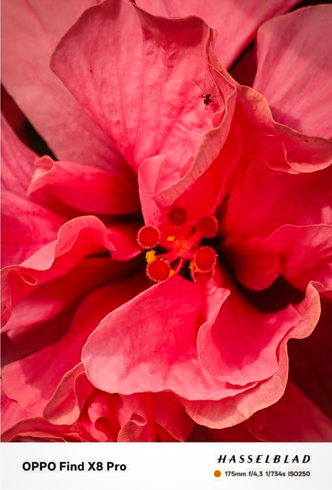
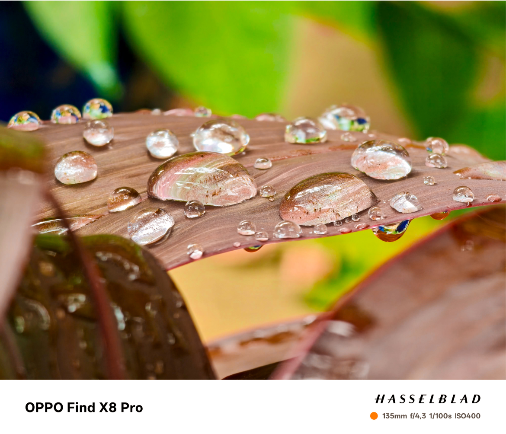
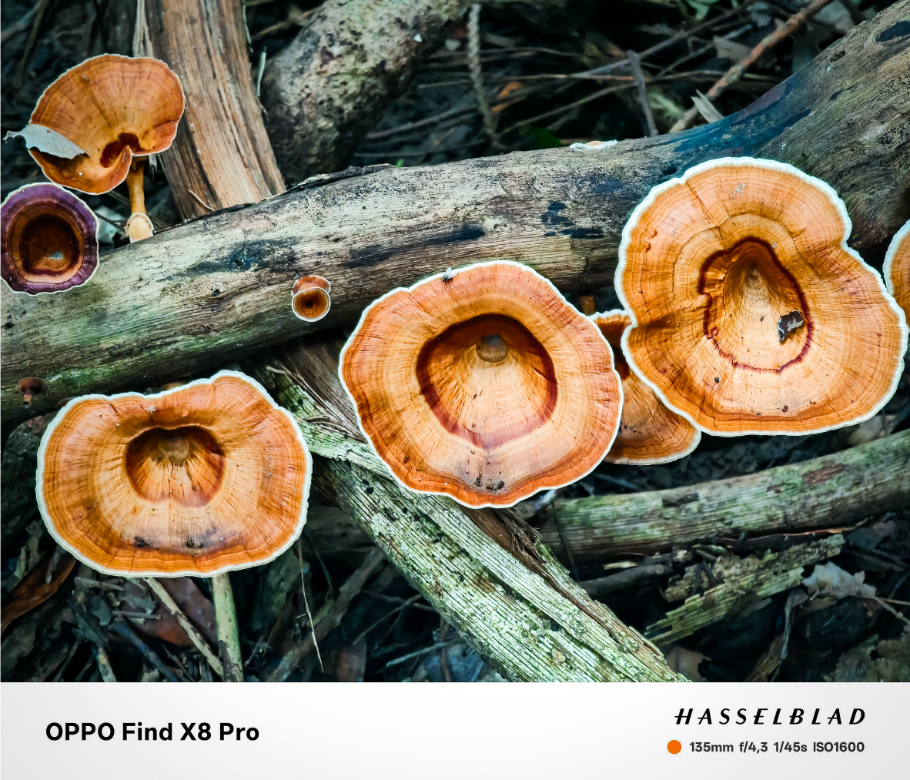
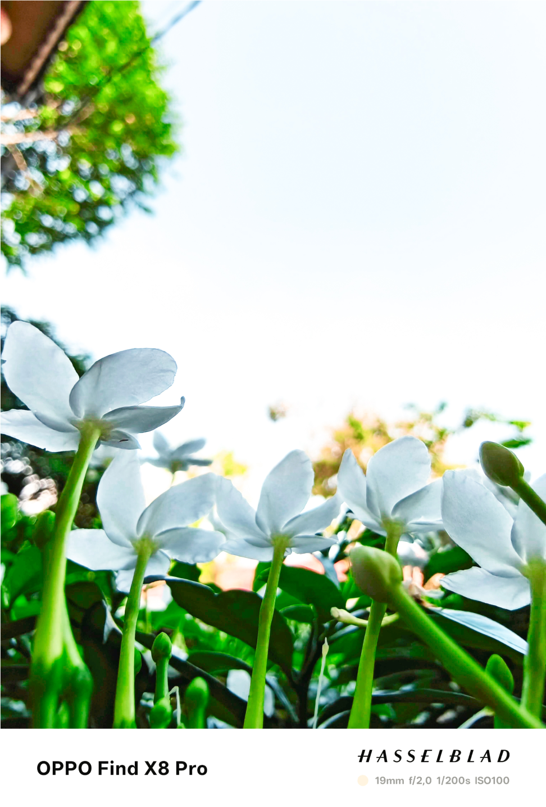

Đối lập với sự hùng vĩ, bao la phía trên, ẩn khuất sau những tán lá xanh rì, những lớp lá mục ruỗng là cả một thế giới “vi mô” không ngừng vận động, không ngừng phát triển, là những mạch dẫn căng tràn nhựa sống cung cấp cho cả khu rừng.
Camera tiềm vọng kép 3X - 6X trên OPPO Find X8 Pro phá vỡ mọi giới hạn không gian, cho phép mình khám phá những "sức sống" nhỏ bé đang âm thầm vận hành theo cách tự nhiên nhất. Từng chiếc nấm với các đường vân độc đáo, từng giọt sương sớm còn đọng trên lá cỏ, từng đóa hoa, mầm cây đều đang góp phần tạo nên vẻ đẹp cho khu rừng.



